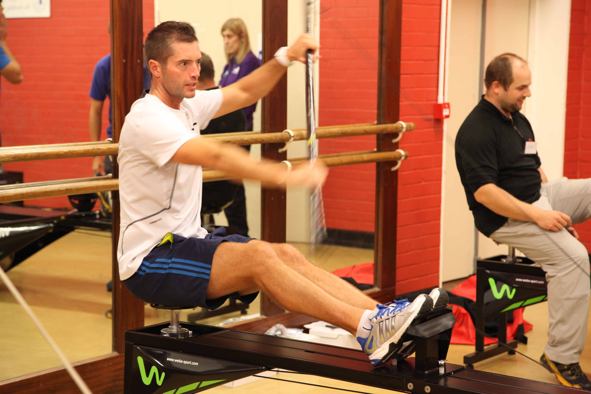
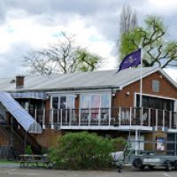
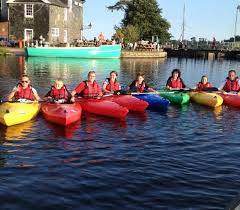

Norwich owes much of its rich history to the river - any visitor to the city would be missing out if they didn't take a trip along it. Canary Canoe is a company which has been around since 2010 located in the centre of the city, near to the Playhouse Theatre and the Norwich University of the Arts campus, and offers an excellent starting point for any river adventure. We benefit from easy access to six kilometres of beautiful, gently flowing river upstream as far as Hellesdon Mill and downstream to New Mills. At New Mills Yard there is a short portage which allows access through the city, passing Cow Tower, Pulls Ferry, Norwich Cathedral and beyond towards Whitlingham and the Broads.
We have almost 250 members, of all abilities, and many members regularly compete in competitions. There are a range of training sessions for all abilities and we offer beginner courses to get everyone started. Our qualified coaches will help you progress and enjoy your time in Canary Canoe.
At Canary Canoe we have members at all levels and we offer taster sessions and beginner courses to get you started. There are a variety of canoeing types to choose from such as Inland Touring, Open Canoeing, Stand up Paddleboarding and more.
Coaching
Our dedicated team of coaches are certified by British Canoeing. They get to know you and help you progress.
Facilities
We have all the equipment you need to get started with your canoeing future. We have an excellent gym and other facilities in our new clubhouse.
Excellence
Our club regularly compete in competitions worldwide.
Social
We are a friendly club and we hold regular events throughout the year. There are also club dinners twice a week.
 Whitlingham Ln, Norwich NR14 8TR
Whitlingham Ln, Norwich NR14 8TR